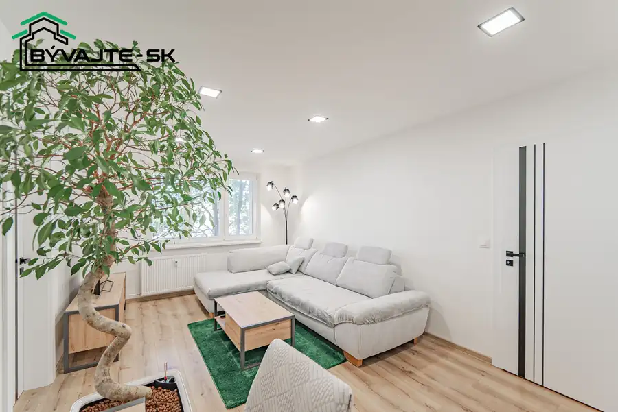
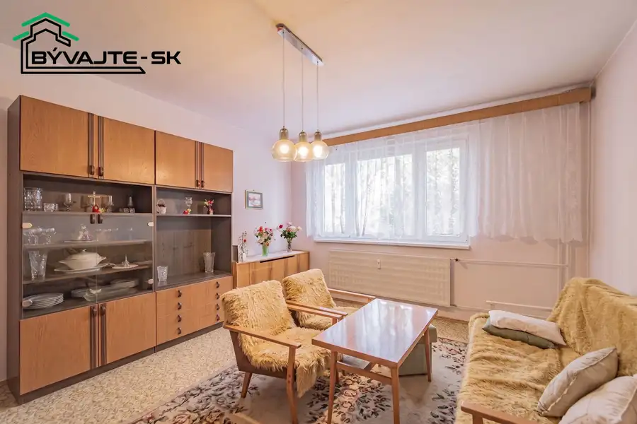

Pozemok (816 m²) v kľudnej a tichej lokalite v zastavanom území v obci Malá Čausa
Malá Čausa
- Plocha816 m²
O nehnuteľnosti
Hľadáte miesto pre rodinný útulný rodinný dom, chatu alebo mobilný dom v tichom prostredí a s dobrou dostupnosťou?V RK BÝVAJTE – SK ponúkame na predaj pozemok situovaný priamo v intraviláne obce Malá Čausa, okres Prievidza.Pozemok je mierne svahovitý a má špecifický dlhší a užší tvar.Tieto proporcie vôbec nebránia stavbe plnohodnotného bývania – práve naopak, sú ideálne na výstavbu moderného užšieho rodinného domu (s maximálnou šírkou do 7 metrov) alebo priestranného dvojpodlažného domu, ktorý maximalizuje obytnú plochu. Rovnako dobre poslúži aj na osadenie rekreačnej chatky či mobilného domu. Dnešné technológie ponúkajú rôzne a dostupné možnosti pre stavby vhodné na takýto typ pozemku.Aktuálne sa na pozemku nachádza ovocný sad. Veľkou výhodou je prístup priamo z obecnej asfaltovej cesty.Pre záujemcov o naozaj veľký priestor je tu mimoriadne výhodná možnosť odkúpiť aj parcelu hneď za pozemkom s rozlohou ďalších 853 m². Získať tak môžete veľkorysý priestor s celkovou výmerou až 1 669 m².PARAMETRE POZEMKUVýmera: 816 m² (s možnosťou rozšírenia o ďalších 853 m²)Tvar a terén: Dlhý a úzky, mierne svahovitý.Prístup: Priamo z asfaltovej komunikácieVyužitie: Plnohodnotný rodinný dom (do šírky 7 m / dvojpodlažný), chata, mobilný domLOKALITAMalá Čausa je pokojná obec s príjemnou atmosférou, dobrou dostupnosťou do Prievidze len 10 minút autom a pekným prírodným okolím. Ideálne miesto pre tých, ktorí chcú bývať mimo ruchu mesta, ale stále v rozumnej vzdialenosti od všetkého potrebného.Okolitá príroda ponúka možnosti na turistiku, horskú cyklistiku, zber húb a v zimných mesiacoch oceníte blízke lyžiarske stredisko Remata.VÝHODYPozemok priamo v intraviláne Možnosť stavby plnohodnotného domu.Tichá lokalita blízko prírody.Prístup priamo po asfaltovej ceste.Výhodná možnosť prikúpiť ďalších 853 m² za lukratívnu sumu.Cena: 29 900 €Zaujala vás táto ponuka? Pre viac informácií alebo dohodnutie obhliadky ma neváhajte kontaktovať. Rád vám pozemok ukážem osobne. KontaktTomáš Lalik tel: 0949 166 768 mail: laliktomas@byvajtesk.sk web: byvajtesk.sk
Parametre
| Druh | Pozemok pre rodinné domy |
|---|---|
| Dátum zverejnenia | 30. 7. 2026 |
| Elektrina | Pri pozemku - 230 V |
| Odpadové vody | Nedostupné |
| Plocha pozemku | 816 m² |
| Plyn | Pri pozemku |
| Pripravenosť k výstavbe | Schválené v územnom pláne |
| Terén pozemku | Mierne svahovitý |
| Typ | Predaj |
| Voda | Pri pozemku - Verejný vodovod |
Kde to je


Mohlo by Vás zaujímať

BytNové10 Cena dohodouPrenájom: Nadštandardný kompletne zrekonštruovaný a zariadený 2-izbový byt (62,4 m²) Prievidza 2-izbový62.4 m²2. podlažie RK - BÝVAJTE Vám Ponúka na prenájom krásny, novo zrekonštruovaný 2-izbový byt s celkovou výmerou 62,4 m², ktorý sa nachádza v tichej a vyhľadávanej…
BytPredané9 PredanéSkvelá príležitosť! 2-izbový byt s loggiou na ul. Clementisa pripravený na vašu rekonštrukciu Prievidza 2-izbový51 m²1. podlažie Hľadáte bývanie, ktoré si môžete od podlahy prispôsobiť presne podľa svojich snov a predstáv?V RK BÝVAJTE - SK Vám ponúkame na predaj 2-izbový byt v…